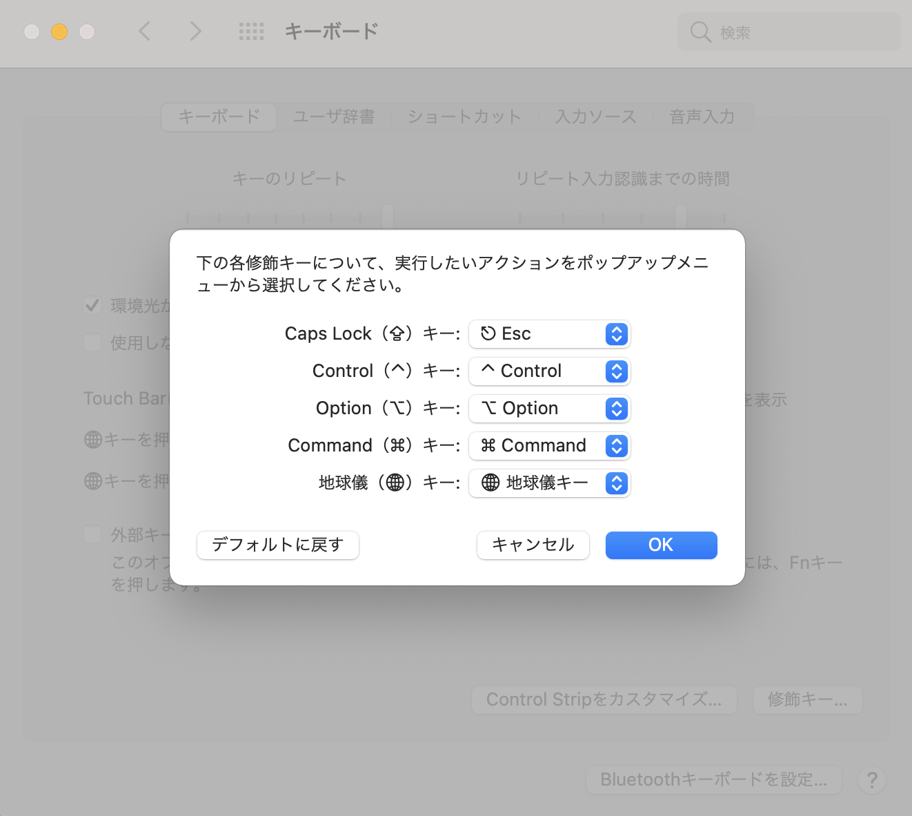
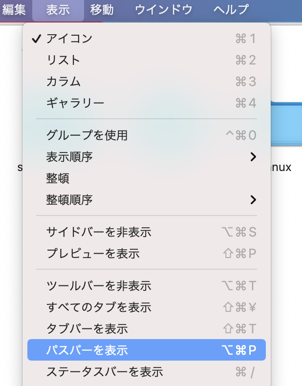
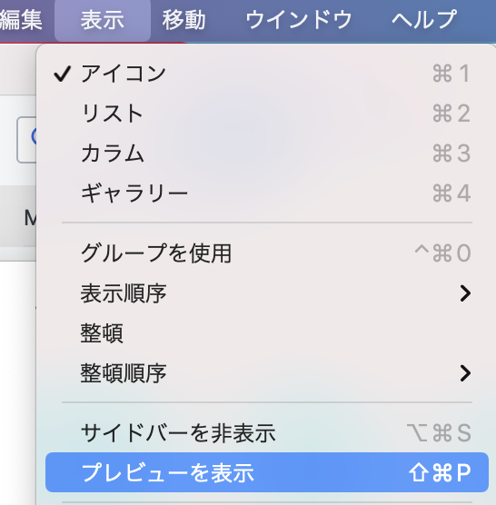
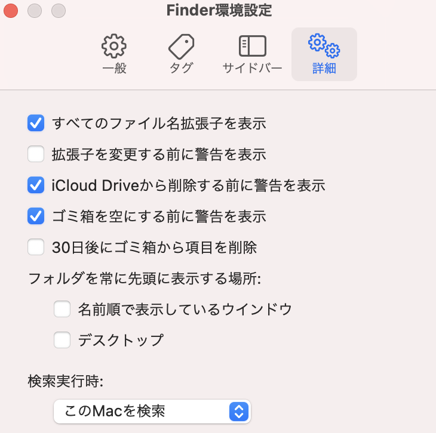
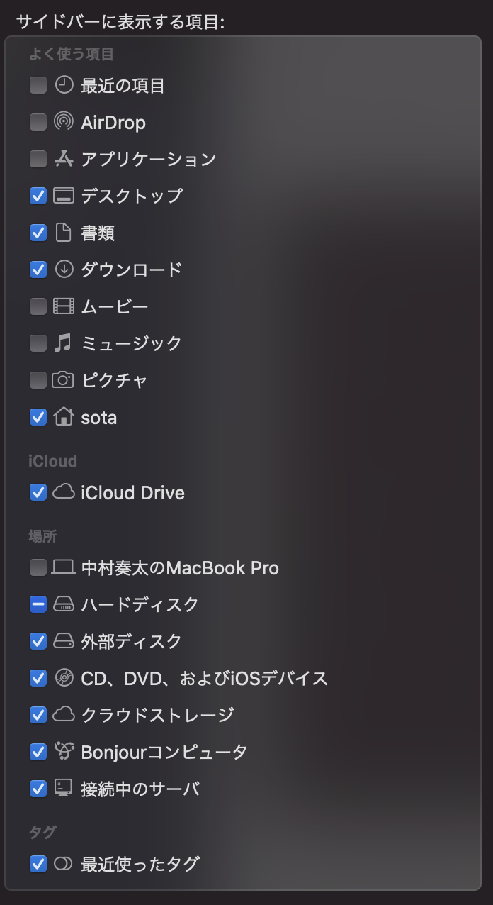

基本設定
システム環境設定/一般/ダークシステム環境設定/一般/スクロールバーを常に表示システム環境設定/共有で名前を変更しておくシステム環境設定/ディスプレイで解像度を変更/スペースを拡大にするシステム環境設定/キーボード/入力ソースで数字を全角入力のチェックを外すユーザー辞書登録
システム環境設定/キーボードからユーザー辞書を選択
入力を英語にしても，日本語でしか反応しないことに注意
capslockの無効化
WindowsのCtrlの位置に配置されているため，打ち間違いが多い．
システム環境設定/キーボード/キーボードタブの修飾キーから変更ができます．無効化はESCにします．

Finderのパスバーを設定
表示/パスバーを表示

Finderでプレビューを表示
表示/プレビューを表示
あまり使わないかも...

ファイルの拡張子を表示
Finder/環境設定/すべてのファイル名拡張子を表示

Finderのサイドバー設定
Finder/環境設定/サイドバー

ホットコーナー
システム環境設定/デスクトップとスクリーンセーバー/スクリーンセーバー/ホットコーナー
スクリーンセーバーやデスクトップを割り当てておくと便利
※スクリーンセーバーは下記が人気
https://fliqlo.com/screensaver/
マウスの速度設定(加速度をオフ)
ターミナルで下記を入力
defaults write .GlobalPreferences com.apple.mouse.scaling -1 (元に戻す時) defaults write .GlobalPreferences com.apple.mouse.scaling 1
defaults write .GlobalPreferences com.apple.mouse.scaling -1
(元に戻す時)
defaults write .GlobalPreferences com.apple.mouse.scaling 1defaults write -g com.apple.mouse.scaling 16 defaults write -g com.apple.trackpad.scaling 16
defaults write -g com.apple.mouse.scaling 16
defaults write -g com.apple.trackpad.scaling 16設定を反映させるには必ず再起動が必要
sudo defaults write -g ApplePressAndHoldEnabled -bool true
sudo defaults write -g ApplePressAndHoldEnabled -bool trueSpotlightで検索
command + スペース
画面のロック
control + command + Q
アプリケーションの切り替え
command + Tab
切り替えながらアプリケーションを終了
command + Tab → 該当アプリでQ
アプリケーションの終了
command + Q
アプリケーションの非表示
command + H
アプリケーションの最小化
command + M
画面キャプチャ
画像：command + shift + 4
クリップボード：command + shift + control + 4
動画：command + shift + 5
カーソル移動
行頭：command + ←
行末：command + →
文頭：command + ↑
文末：command + ↓
Deleteキー
fn + ×
Redo(一つ先の作業に進む)
command + shift + z
拡大(ズームイン)
command + shift + -
縮小(ズームアウト)
command + -
カタカナ変換
control + k
ファイルを開く
command + O
新規タブで開く
command + T
ファイル名の変更
Enter
ゴミ箱に入れる
command + delete
パスから開く
command + shift + G
パスのコピー
option + command + C
階層の移動
上層(戻る)：command + ↑
下層(進む)：command + ↓
ファイルの移動
command + C の後に，command + option + V
主要フォルダへ移動
ホーム：command + shift + H
デスクトップ：command + shift + D
アプリケーション：command + shift + A
ユーティリティ：command + shift + U
ダウンロード：command + option + L
フォルダ表示形式の変更
アイコン：command + 1
リスト：command + 2
カラム：command + 3
ギャラリー：command + 4
ファイルを並び替え
名前でソート：command + option + 1
種類でソート：command + option + 2
最後に開いた日でソート：command + option + 3
追加日でソート：command + option + 4
変更日でソート：command + option + 5
サイズでソート：command + option + 6
タグでソート：command + option + 7
なし：command + option + 0
ファイルの削除
command + delete
ファイルを開く
command + O
隠しフォルダ/ファイルを表示/非表示
command + shift + .
$ echo $SHELL
$ echo $SHELL $ ls 隠しファイルも出力する場合 $ ls -a
$ ls
隠しファイルも出力する場合
$ ls -a$ print env
$ print env$ touch ファイル名
$ touch ファイル名$ open ファイル名
$ open ファイル名$ export 環境変数名=通したいパス:$環境変数名
$ export 環境変数名=通したいパス:$環境変数名$環境変数名:通したいパスでもOK．
$ echo 'export 環境変数名=通したいパス:$環境変数名 >> ~/.zshrc' Bashの場合はbashrc
$ echo 'export 環境変数名=通したいパス:$環境変数名 >> ~/.zshrc'
Bashの場合はbashrc.zshrcはターミナルを新規で開いた時に毎回読みにいくファイル．つまりターミナルでこれを実行しても今開いているターミナルでは反映されていない．反映させるために下記を実行する
※>は前に書いてあった内容を消して書き直す．>>は追記できる
$ source ~/.zshrc
$ source ~/.zshrc$ tar -zxf ファイル名
$ tar -zxf ファイル名VScode
RunCat
CPU使用状況に応じてネコが走るもの
https://apps.apple.com/jp/app/runcat/id1429033973?l=en&mt=12
DeepL
翻訳アプリ．command + c2回で起動できる
1Password
パスワード管理アプリ．
https://apps.apple.com/jp/app/runcat/id1429033973?l=en&mt=12
無料では20件までしか登録できないらしい
Clipy
クリップボード管理アプリ．
https://clipy.softonic.jp/mac
command + shift + Vで表示される．またユニペットを事前に登録しておくと便利iStat Menus
CPU使用状況などを簡単に確認できる
→有料でした
Homebrew
macOS上で動作するパッケージ管理ツール
$ /bin/bash -c "$(curl -fsSL https://raw.githubusercontent.com/Homebrew/install/HEAD/install.sh)"
$ /bin/bash -c "$(curl -fsSL https://raw.githubusercontent.com/Homebrew/install/HEAD/install.sh)"brew -v
brew -vインストール：brew install パッケージ名 一覧表示：brew list アンインストール：brew remove パッケージ名 全てをアップグレード：brew upgrade 個別にアップグレード：brew upgrade パッケージ名
インストール：brew install パッケージ名
一覧表示：brew list
アンインストール：brew remove パッケージ名
全てをアップグレード：brew upgrade
個別にアップグレード：brew upgrade パッケージ名